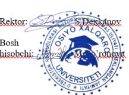

1.1. Universitet tayyorlash dasturi bo’yicha o‘quv jarayonini (keyingi o‘rinlarda “O’qitish”)ni amalga
oshirish majburiyatini o‘z zimmasiga oladi, talaba-to‘lovchi Universitet tomonidan tasdiqlangan
tariflar bo’yicha taqdim etiladigan xizmatlarni to‘lash majburiyatini oladi. Talabaning ta’lim
ma’lumotlari quyidagicha:
Ta’lim bosqichi: {{study_type}}
Ta’lim shakli: {{education_form}}
O’qish muddati: 5 yil (2023-yil sentabrdan 2028-yil iyungacha)
O’quv kursi: 1-kurs
Ta’lim yo’nalishi: {{direction}}
2.1. Universitetning huquq va majburiyatlari:
2.1.1. O’qitish uchun “Ta’lim to‘g‘risida”gi O’zbekiston Respublikasi qonuniga muvofiq Universitet
Nizomida nazarda tutilgan zarur shart – sharoitlarni yaratish;
2.1.2. Talabalarga qonun bilan berilgan huquqlarini erkin amalga oshirilishini va universitet
Nizomiga muvofiq majburiyatlarning bajarilishini ta’minlash;
2.1.3. Mutaxassisni tasdiqlangan o‘quv rejasi va dasturlarga muvofiq davlat ta’lim standarti talablari
darajasida tayyorlash;
2.1.4. O’zbekistonda Mehnatga haq to‘lashning eng kam miqdori yoki bazaviy hisoblash yoki tariflar
o‘zgarganda ta’limning qolgan muddati uchun to‘lov miqdorini qayta xisob-kitob qilib o‘zgartirish
Universitet o‘z zimmasida qoldirish va bu haqda talabani 15 kun oldin ogohlantirish;
2.1.5. To‘lov shartnoma pulini o‘z vaqtida to‘lagan abituriyentlarni talabalar safiga qabul qilish;
2.1.6. To‘lov shartnoma pulini o‘z vaqtida to‘lamasdan kelgan hamda Universitet tomonidan
belgilangan Ichki-tartibqoidalari talablariga rioya qilmagan abituriyent va talabalarni universitet
binosidan va o‘quv resurslaridan foydalanish imkoniyatiyani cheklash hamda imtihonlarga
kiritmaslik.
2.2.1. Ta’lim olish jarayonida tegishli normativ-huquqiy hujjatlar, oliy ta’lim muassasalari binosi,
kutubxona fondi va elektron o‘quv resurslaridan foydalanish;
2.2.2. O’zbekiston Respublikasi Vazirlar Mahkamasining 2020 yil 31 dekabrdagi 824-sonli Qarori 1-
ilova “Oliy ta’lim muassalarida o‘quv jarayoniga kredit-modul tizimini joriy etish tartibi
to‘g‘risida”gi
Nizom talablariga amal qilish va uni so‘zsiz bajarish;
2.2.3. O’quv jarayonida bilim va saviyani baholash mezonlari bo‘yicha to‘liq ma’lumot olish;
2.2.4. Universitet tomonidan tashkil etiladigan sport-sog‘lomlashtirish, ma’naviy-ma’rifiy va boshqa
ijtimoiy tadbirlarda ishtirok etish;
2.2.5. Universitet tomonidan belgilangan ichki tartib Qoidalari talablariga to‘liq rioya qilishi hamda
Universitet rahbariyati tomonidan chiqarilgan buyruq va farmoyishlarni so‘zsiz bajarish;
2.2.6. Joriy o‘quv yili uchun belgilangan o‘qitishning to‘liq qiymatini o‘z muddatlarida to‘lash;
2.2.7. To‘lov amalga oshirilgandan so‘ng talaba Universitet buxgalteriyasiga to‘lovni tasdiqlovchi
hujjatlarni taqdim etishi shart. To‘lovni amalga oshirishda to‘lovning maqsadi (izoh)ga quyidagilar
ko‘rsatilishi lozim: talabaning familiyasi, ismi va sharifi hamda shartnomaning raqami va tuzilgan
sanasi.
2.2.8. Talaba mazkur shartnoma bo’yicha, shartnoma majburiyatlarini bajarish imkoniyatiga ega
bo‘lmagan taqdirda, Universitetni yozma ravishda xabardor qilishi lozim. Yozma xabarnoma
berilmagan taqdirda, Universitet shartnomani bir tomonlama bekor qilish huquqiga ega bo‘ladi.
Mazkur holatda talaba universitetga da’vo qilish huquqidan mahrum bo‘ladi.
2.2.9. Pasport ma’lumotlari, manzil va aloqa rekvizitlari o‘zgargan vaqtdan e’tiboran besh kun ichida
universitetga xabar berish.
2.2.10. Talaba o‘qish jarayonida ayrim fanlarni talab darajasida o‘zlashtira olmagan holatda,
Universitet tomonidan amalga oshirilgan qo‘shimcha mashg‘ulotlar (darslar) o‘tilganligi uchun shu
Universitet tariflari bo’yicha qo‘shimcha to‘lovlarni amalga oshirish.
2.2.11. Talabada o‘qish davrida O’zbekiston Respublikasi hududidan chet elga chiqish zarurati
tug‘ilgan holda darhol bu haqda Universitetni ogohlantirish.
2.2.12. O’zbekiston Respublikasi davlat standartlari bo‘yicha bilimlarni olish va shu bo‘yicha
universitetdan bilim talab qilish.
2.2.13. Universitet faoliyatida muhim masalalarini muhokama qilishda ishtirok etish, o‘quv
jarayonida boshqa ishtirokchilarining qadr-qimmatini kamsitmagan holda o‘z fikrlarini erkin va ochiq
ifoda etish.
2.2.14. Fanlarni o‘zlashtirishda qiyinchiliklar yuzaga kelganda, Universitet o‘qituvchilari va
xodimlaridan yordam olish.
2.2.15. Talaba ta’lim olayotgan yo‘nalishi bo‘yicha kamida 5 yillik ish stajiga ega bo‘lmagan taqdirda,
universitet tomonidan o‘quv rejaga qo‘shimcha rejalashtirilgan fanlarni o‘qish va o‘zlashtirish
majburiyatini oladi, mazkur majburiy fanlarni belgilangan tartibda va muddatda o‘zlashtirmaslik
talabalar safidan chetlashtirish uchun asos sifatida qabul qilinadi.
2.2.16. Talaba Universitetga topshirilgan hujjatlar, shu jumladan umumiy o‘rta va o‘rta maxsus
ta’lim to‘g‘risidagi hujjat (shaxodatnoma yoki diplomi ilovasi bilan, transkript (baholar varaqasining
asl nusxasi- o'qishni ko'chirib kelgan bo'lsa)) haqiqiy ekanligi uchun shaxsan javobgar
3.1 2023-2024 o‘quv yilida o‘qitishning belgilangan yillik to‘lov miqdori : 12000000 (o`n ikki
million) so‘mni tashkil etadi.
3.2 Talaba yoki jismoniy shaxs to‘lovlarni amalga oshirishi uchun har bir o‘quv yilida alohida
shartnoma rasmiylashtiriladi.
3.3 O’qitish uchun to‘lov quyidagi tartibda amalga oshiriladi: To‘lov-kontrakt semestrlarga va
choraklarga bo‘lib to‘langanda: - o‘qishga birinchi yil qabul qilinganlar (abituriyentlar)
to‘lovkontrakt summasining 50 foiz (talabalikka qabul qilinishi uchun) 2023 yil 30 avgustgacha
kechiktirmay to‘lashi shart, qolgan to‘lovni ikkiga bo’lib to‘laganda, to‘lovni 25 foizini 2023 yilning
30 dekabrgacha, joriy o‘quv yildagi to‘lov - kontraktning oxirgi to‘lovini 2024 yilning 15 martigacha
to‘lashi shart;
3.4 Shartnomaning 3.3-bandida ko‘zda tutilgan to‘lov muddatlarini o‘zgartirish talabaning asosli
sabablari ko‘rsatilgan holdagi yozma murojaatiga ko‘ra Universitet kengashining qarori asosida
qabul qilinadi va bir semestr mobaynida amal qiladi.
3.5 Talaba Universitetning Ichki-tartib qoidalarini yoki o‘quv intizomini buzganligi, shartnoma
shartlarini bajarmaganligi uchun o‘qishdan chetlashtirilganda o‘qigan davri uchun to‘langan
to‘lovlar qaytarib berilmaydi. Talabaning o‘qigan davriga mos ravishda to‘lovlar to‘lanmaganligi
aniqlanganda, uni o‘qishga qatnashgan davri uchun to‘lov ixtiyoriy yoki sud tartibida undiriladi.
3.6 Qo‘shimcha-kontrakt to‘lovi asosida qabul qilingan talabalar o‘quv yilining ikkinchi semestridan
uzrli sabablarga ko‘ra qatnasha olmaganda, keyingi o‘quv yilda, o‘qishni davom ettirishi uchun
mazkur shartnomada belgilangan summaning to‘lagan taqdirda o‘qishni davom ettirishi mumkin.
3.7 Talabaga Universitet tashabbusi bilan talabalar safidan chiqarilganda, avvalgi to‘lagan pul
mablag‘lari qaytarilmaydi.
3.8 Talaba akademik fanlarni talab darajasida o‘zlashtirmaganda, kursdan kursga qoldirish nazarda
tutiladi, bunday holda kontrakt to‘lov talaba tomonidan har bir o‘qigan davriga mos ravishda
to‘lanadi.
3.9 Talaba kontrakt to‘lov mablag‘larini amalga oshirib bo'lib, uzurli sabablarga ko‘ra (yashash joyi
o‘zgarib ko‘chib ketganda, sog'ligi yomonlashganda va x.k.) talabaning mazkur Universitetda o‘qish
imkoniyati cheklanganda, talaba o‘quv jarayonini boshlanishidan 10 kun oldin Universitet
ma’muriyatiga bu haqda yozma murojaat qilishi shart, aks holda to‘lov kontrakt mablag‘lari
qaytarilmaydi.
3.10 Talabaning ta’lim xizmatlari uchun to’lov uchinchi shaxs (jismoniy va/yoki) yuridik shaxs
tomonidan to’liq va/yoki qisman to’lanishi mumkin. Universitet talaba va uchinchi shaxs o’rtasidagi
munosabatlar bo’yicha hech qanday mas’uliyatga ega bo’lmaydi va javobgar bo’lmaydi. Talab ava
uchinchi shaxs (buyurtmachi) o’rtasidagi munosabatlar ular o’rtasida imzolanadigan bitim asosida
tartibga solinadi. Bunday bitim Universitet uchun majburiyatlar yaratmaydi.
4.1 Shartnoma quyidagi hollarda bekor qilinishi mumkin:
4.2 Tomonlarni o‘zaro roziligibilan;
4.3 Universitet Nizomiga muvofiq ma’muriyatning tashabbusiga ko‘ra ta’lim oluvchi o‘qishdan
chetlashtirilganda;
4.4 Tomonlardan biri shartnoma shartlarini bajarmaganda;
4.5 Ta’lim oluvchining tashabbusiga ko‘ra;
4.6 Amaldagi qonunchilikda ko‘rsatilgan boshqahollarda.
4.7 Shartnomaga o‘zgartirish va qo‘shimchalar tomonlarning kelishuviga ko‘ra kiritiladi.
4.8 Talaba tomonidan shartnomada belgilangan majburiyatlar bajarilmagan taqdirda universitet
ushbu shartnomani bir tomonlama bekor qiladi va talabani talabalar safidan chetlashtiradi.
4.9 Shaxsiy hujjatlarning asl nusxasini o‘z vaqtida topshirilmaslik yoki taqdim etilgan xujjatlar
haqiqiy emasligi aniqlanganda, Universitet shartnomani bir tomonlama bekor qilish huquqiga ega
bo‘lib, talabani talabalar safidan chetlatishga asos bo‘ladi.
4.10. Talabaning o‘qishni ko‘chirib boshqa OTMlarda davom ettirish, xuddi shunday boshqa
OTMlardan o‘qishni ko‘chirib Universitetda o‘qishni davom ettirish niyati borligi haqidagi murojaati
semestr yakunida, akademik fanlardan qarzdorligi yo‘qligi ko‘rib chiqilib, 5 ish kuni mobaynida
qaror qabul qilinadi.
4.11. Tomonlar o‘rtasida kelib chiqadigan nizolar O’zbekiston Respublikasining amaldagi qonun
talablari asosida hal etiladi
5.1. Yengib bo‘lmas kuch, ya’ni: yong‘in, tabiiy ofat, urushlar, harbiy operatsiyalar, yuqumli kasalliklar pandemiyasini tarqalishini oldini olish - fuqarolar manfaatlari, birinchi navbatda, ularning hayoti va sog‘ligini himoya qilish maqsadida karantin holati e’lon qilinib butunlay to‘xtatish vujudga kelgan vaziyatda va bevosita mazkur shartnoma bajarilishiga ta’sir etgan holda majburiyatlar to‘liq yoki qisman bajarilmaganligi uchun tomonlar javobgarlikdan ozod qilinadi. Shu bilan birga mazkur shartnoma bo’yicha majburiyatlar bajarilishi muddati shu kabi vaziyatlar bo‘lib o‘tgan vaqtga mos ravishda suriladi.
6.1 Mazkur shartnomaga har qanday o‘zgartirish va qo‘shimchalar kiritish ular faqatgina ikkala
tomon mas’ul vakillar tomonidan imzolangan va yozma ravishda bajarilgan holdagina huquqiy
hisoblanadi.
6.2 Boshqa tomonning yozma ruxsatisiz xech bir tomon mazkur shartnoma bo’yicha o‘z huquq yoki
majburiyatlarini ikkinchi shaxsga berishi mumkin emas.
6.3 Shartnoma mazmuni jixatidan bir xil, teng yuridik kuchga bo‘lgan 2 nusxada tuzilib, bir
tomondan talabaning imzosi yoki Buyurtmachi imzosi va muhri, ikkinchi tomondan Universitet
imzosi va muhri bilan tasdiqlanadi.
| “OSIYO XALQARO UNIVERSITETI” MChJ | {{name}} | |
|
Manzil: Buxoro viloyati, Buxoro
shaxar, Yangiobod MFY,
G’ijduvon ko‘chasi, 74 - uy
Telefon: +998553050009 Bank rekvizitlari: H/r: 20208000605567237002 ATB Ipoteka bank ATIB Buxoro viloyat filiali MFO: 00088 STIR: 309855582 IFUT: 85.42.0 |
Manzil: ___________________________ ___________________________ ___________________________ ___________________________ Pasport seriyasi va raqami: ___________________________ Telefon: {{phone}} _____________________ |
Manzil: ___________________________ ___________________________ ___________________________ Bank rekvizitlari: H/r: ______________________ ___________________________ ___________________________ MFO: STIR: IFUT: |
| TOMONLAR IMZOLARI | ||
|  |
Talaba: ___________________
(imzo) {{name}} |
Buyurtmachi Rahbar: ___________ Bosh hisobchi: ___________ |